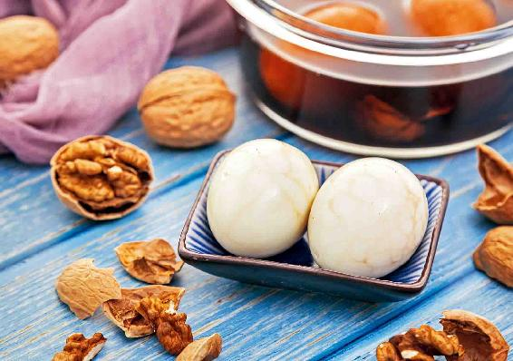
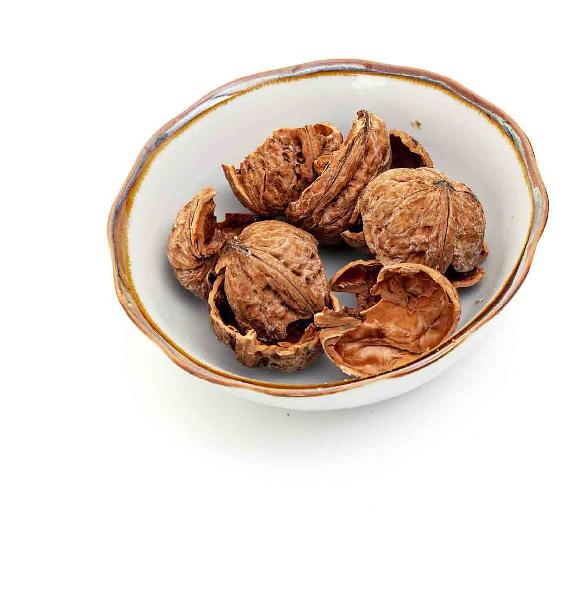
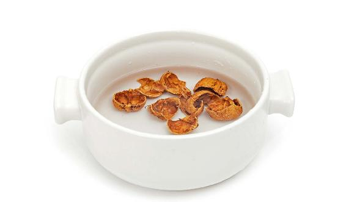
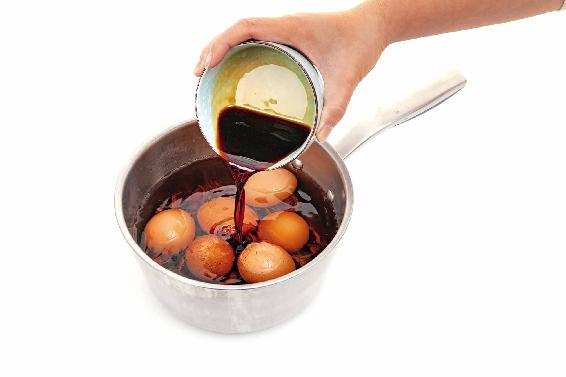
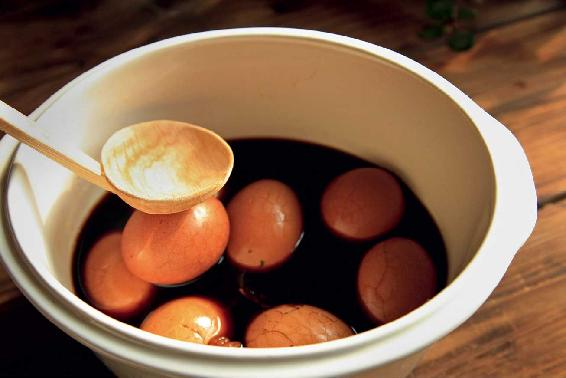
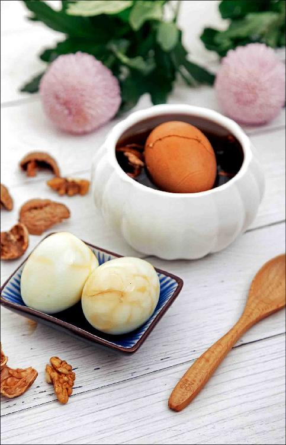
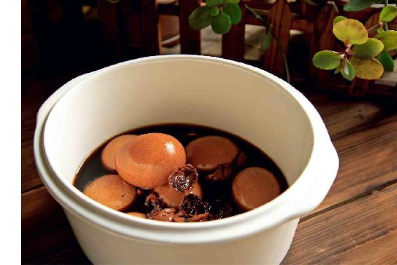
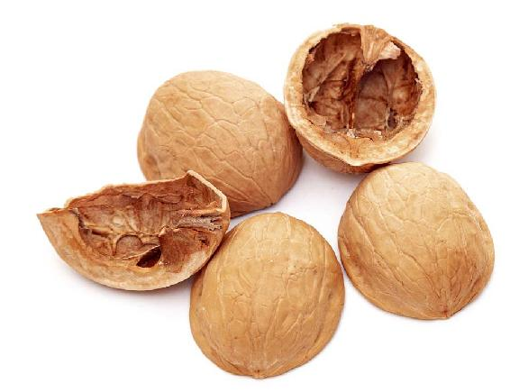
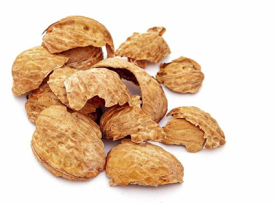

古人在立夏的时候都会送春，现在民间一些地方还保留着在立夏这天来践春的习俗。
践春就是给春天践行，就像北宋词人贺铸在他的《青玉案》里写的：“凌波不过横塘路，但目送、芳尘去，锦瑟华年谁与度？月桥花院，琐窗朱户，只有春知处。飞云冉冉蘅皋暮，彩笔新题断肠句。试问闲情都几许？一川烟草，满城风絮，梅子黄时雨。”
这首词的最后一句特别有名，写的就是从暮春到初夏过渡的风物。立夏后，在南方,真的是一川烟雨马上就要来了，因为后面就要进入梅雨季节了——“梅子黄时雨”，我们也要开始吃青梅，做青梅酱，酿青梅酒了。
而在北方，仍然还有满城风絮——柳絮、杨絮，还有其他一些树的飘絮漫天在飞，吸入鼻腔、沾在脸上都容易引起过敏。出门最好是戴个口罩，回家以后，马上好好把脸洗干净。对柳絮、杨絮过敏的人，可以每天用10克甘草煮水喝来预防。
暮春到初夏的过渡时期，希望您能抽出时间，给自己的身体和心情，做一个小小的笔记，对照春季养生有哪些疏漏，在接下来的夏季，好好地补足养生的功课，不辜负夏日的时光。
就像古人说的，春天走了我们也无须惆怅，因为明年春天还会归来——“明年春更好，只怕人先老”，所以我们在接下来的夏秋冬三季都要多保重身心，来年才会享受到更美的春光。
进入夏天，不仅小孩子要长个子，大人也要长。大人长什么呢？让身体新生的细胞能够更快地生长，以代替老化的细胞，这样就可以预防衰老。
为了更好地“夏长”，我们要从立夏这一天开始打基础，要好好地来补一补肾气。
立夏节气这十五天，我们的补养重点就是固摄肾气，以防夏天的炎热耗伤人体的正气，而肾气就是正气的主要部分。
夏天是养心的季节，心、肾是相通的，如果要养心，那就要在夏天刚开始的时候保护好肾气，这样心的阳气才会充足，为夏天三个月的养长提供动力来源。
一年有四立：立春、立夏、立秋、立冬。交“四立”节气的这天，是一个季节的开始，也是一个重要的转折点。
立夏开始，我们的生活起居一定要顺时而变，除了在饮食上的变化——喝姜枣茶，吃核桃壳煮鸡蛋，还要顺应太阳的时间，要早起了。因为从立夏开始，太阳升起来的时间非常早，比如我住在北京，立夏后，早上5点太阳就出来了。
立夏节气那天，您不妨早早地起来去看一看日出，迎接夏天的第一抹阳光。那种充沛的阳气，会让人感到精神十足，好像喝了一碗补药汤。
核桃壳煮鸡蛋

立夏的时候，我们可以多吃一些补气的食物，比如，糯米、豆子、鸡蛋。注意：这个时候还用不着吃黄芪，黄芪可以等到三伏的时候来吃。立夏的时候只需吃一些比较温和的补气食物，并且是以补肾气为主。
给大家推荐一道立夏期间的补气食方。
原料：核桃壳6个，鸡蛋6个。这是一家人的用量。如果是一个人吃，可以相应地减量。

做法：
1.把核桃壳洗干净，放入锅里，加清水泡半小时。用大火煮开，转小火煮1小时，煮到水有点偏棕色后，就可以关火了。

2.等锅里的水晾凉后，再把洗干净的鸡蛋放入核桃壳水里（如果水没有晾凉就放鸡蛋来煮，鸡蛋壳容易被煮裂）。还可以按自己的口味来放一点酱油和一点盐。

3.再用大火把核桃水煮开后转小火，煮上六七分钟后，不要关火，拿不锈钢勺子轻轻地敲一敲鸡蛋。如果感觉鸡蛋很有弹性，那就说明里面的蛋白已经凝固了，这时您再加大一点力度来敲，直到敲出像蜘蛛网那样的裂缝，以更好地吸收核桃壳水的味道和里面的营养成分。继续用小火煮10分钟，关火。

允斌叮嘱：
1. 核桃壳煮鸡蛋最好是头天晚上煮，煮好以后，让鸡蛋在核桃壳水里泡一晚上，第二天早上吃，这样鸡蛋能充分吸收核桃壳水的药性，也更入味。
2. 酱油和盐放多少您可根据自己的口味来定。如果您不想吃咸的，可以不放酱油，但盐要放一点点，因为在这道方子里头，盐不仅是调味的，它还是一个药引子，盐可以引药入肾经。这道方子就是为了固住人体的肾气，所以要放一点点盐引药入经，让效果更好。
我在书里写一家人吃核桃壳煮鸡蛋，用六个鸡蛋。经常有朋友留言问我一定要把六个鸡蛋吃完吗？其实这不是药，不用限制数量。六个鸡蛋是一家人（一家三口）的量，一般来说，早上每个人吃两个鸡蛋是比较合适的。
您也可以根据自己的消化能力来定。有的人可能每天只吃得下一个鸡蛋，那您吃核桃壳煮鸡蛋时就吃一个；有的人可以吃三个，比如小孩子（小孩子因为正在长身体，是可以多吃的），只要吃下去能消化就可以。
如果没有时间每天都做核桃壳煮鸡蛋，您不妨一次多煮点，用核桃壳水泡着，像茶鸡蛋一样，放在冰箱里，吃上两三天也是可以的。
核桃壳煮鸡蛋在立夏节气的十五天里可以每天都吃。如果女性在生理期，其中痛经比较严重的两三天暂时不要吃，因为核桃壳有收敛的作用。
读者评论：才吃了一次核桃壳煮鸡蛋，就给了我非常大的惊喜
天宝妹子：核桃壳煮鸡蛋真的非常香。我以前对鸡蛋还是比较排斥的，特别是鸡蛋清，跟随老师之后不断地有所突破，现在开始认真地吃鸡蛋，每天早餐可以吃两个完整的鸡蛋。
luyunqiu：吃核桃壳煮鸡蛋，核桃汁我们全家人三辈都喝了，上午喝姜枣茶，下午喝核桃壳煮鸡蛋的汁，非常好喝。我是60多岁的老年人，用了这个方子晚上很少起夜了。
岁月的童话：我生完孩子一直牙酸、牙软，不敢咬硬的东西，吃了几天核桃壳煮鸡蛋真的就好了。前年吃了之后腰疼好了很多，而且味道很好！
王贺梅：我的生活因有你的陪伴而健康。因为健康，家庭很和谐，一家人都很开心。十分感谢陈老师，才吃了一次核桃壳煮鸡蛋，就给了我非常大的惊喜，我的生命中感恩有你陪伴，谢谢！
米朵儿_：亲爱的陈老师，核桃壳煮鸡蛋已经吃了六年了，这是养生功课里的所有食方中全家最喜欢的一个。早早就备存好的核桃壳，昨晚泡起来，今天煮起来吃啦！开心还是开心！
vv糖：每天晚上提前用核桃壳煮好鸡蛋，泡上一晚，早上加热吃。一大早又煮上一壶姜枣茶，核桃壳和姜枣茶的香气弥漫在空气中，是幸福的味道。心中满是感恩。
石悦静：没想到每天吃核桃壳煮鸡蛋，竟治好了我的尴尬事。之前我一跳绳，就会有小便流出来。

核桃壳煮鸡蛋，有很多老读者特别喜欢，觉得味道的确不错，有些朋友觉得它比茶叶蛋还要香。
它的效果也让吃过的人感到惊喜，比如，有的朋友牙齿经常会酸、松动，有的朋友觉得腰腿沉重无力，有的朋友经常尿频，有的女性朋友白带过多，但吃了核桃壳煮鸡蛋以后，大家都觉得状况改善了许多。有些朋友甚至想把煮过核桃壳的水也喝下去。
核桃壳煮鸡蛋的汤汁到底可不可以喝呢？其实是可以喝的。如果您要喝的话，最好在煮鸡蛋的时候少放一点酱油和盐，这样喝起来不会太咸。
还有一个方法：每次做核桃壳煮鸡蛋的汤汁不要倒掉，继续用来煮鸡蛋。我在家里就是这样做的。因为汤汁不沾油的话，是不容易坏掉的。它里面有盐、酱油，就像卤鸡蛋、卤肉的卤汁一样。
在这个食方里，最关键的就是核桃壳和分心木。
什么是分心木呢？分心木就是分开两瓣核桃仁的那一片薄薄的小木片。它的中药名字就是分心木，它跟核桃壳的功效是相似的，都有固涩肾气的作用。所以剥核桃时，不要随手将核桃壳和分心木扔掉了，留起来都是好药。
什么叫作肾气呢？从传统保健的角度来说，它存在于肾脏系统中，有固涩、封藏的作用。
很多朋友都怕自己肾虚，总想补肾。其实要补肾，首先要知道肾虚是虚在哪儿。一般来说，肾虚可以分成肾气虚、肾精虚、肾阴虚和肾阳虚。
对于大多数人来讲，随着年龄的增长，如果出现肾虚，首先就是肾气虚，也就是通常说的肾气不固。
肾气的作用是固摄、封藏，如果它虚了，就不能固住我们身体的精血了。打一个比方，肾气就好比是一道城墙，当它有了漏洞后，就不坚固了，起不到阻隔的作用，这时我们的精血就容易外泄。
因此，当一个人肾气不固的时候，会有以下几种表现：
尿频，慢性腹泻
很多老年人，尤其是老年女性，尿频很明显，可能每隔两小时就要去一趟厕所。
有的老年人甚至在尿频的时候还会尿血。年轻人也会出现这种情况，比如过于劳累、劳伤之后，就出现了尿血的现象。还有些朋友长期腹泻，但并不是吃了不干净的东西拉肚子的那种急性腹泻，而是长期慢性的腹泻，而且便溏。
女性白带过多、清稀，男性遗精……
女性表现为白带过多，而且很清稀，或者崩漏；男性往往表现为遗精、滑泄。还有一些四五岁的小孩子尿床，这些都是肾气不固的表现。
当人肾气不固的时候，精血就会泄漏，长期下来，人就会出现各种各样的虚证。
如果您的身体出现了肾气不固的早期信号，您可以一年四季（长期）经常吃核桃壳煮鸡蛋。
如果您是普通体质的人，只要在立夏节气的这十五天吃核桃壳煮鸡蛋就行了。
如果您想加强效果，喝一些核桃壳煮鸡蛋的水也是不错的。

一般来说，老年人的肾气都比较虚，如果老年人觉得核桃壳煮鸡蛋的味道还不错，挺喜欢吃的，不妨一年四季都煮给他吃。
长期吃核桃壳煮鸡蛋，能缓解老年人腰腿酸软的问题，还能预防听力的衰退。
老年人睡眠不好，一般都跟肾气虚有关系。这个时候给他吃核桃壳煮鸡蛋，最好连煮过的水也喝掉。
如果老年人喝不惯带有咸味的核桃壳煮鸡蛋水，那您就单独用核桃壳给他煮水喝，早上喝一杯，晚上再喝一杯。照这样调理，老年人就不会再频频起夜了。
为了避免老年人总是起夜，容易摔倒，我建议您不妨在家里多备一些核桃壳。给老年人吃核桃壳煮鸡蛋，效果真的很好。
如果您是通过正规渠道购买的核桃，是不需要有太多担心的。
当然，不是说它就一定没有经过漂白，而是说正规厂家销售的核桃，即便是漂白的，用的也是国家允许使用的食品加工助剂来进行漂白处理，基本上不会有毒残留。
即便有一些细微的残留，由于用的是过氧化氢，会分解为水和氧气。国家对于这样的残留并没有规定限量，也就是说这样是安全的。
为了以防万一，您可以先将核桃壳煮一遍水，倒掉，再加水煮开，晾凉后放入鸡蛋再煮。为什么要先用核桃壳煮水呢？因为过氧化氢遇热就会分解为水和氧气，这样一来，即便核桃壳上有过氧化氢残留，经水一煮也会被分解掉了。
完全原生态的核桃
完全原生态的核桃的表皮，是采用完全无公害的方法来处理的。也就是说，核桃的青皮是自然沤烂后去除的，核桃的表面没有经过任何药剂的处理。

漂白过的核桃壳

原生态核桃壳
这种核桃卖相不好看，外壳颜色很深，上面还有黑色的斑点，很容易让人误以为是核桃过期或者坏了，因此，市面上这种核桃很少。
一般市面上的核桃都是经过漂白处理的。如果您想要没有漂白的核桃，需要找到核桃种植的地方去预订，讲明核桃不能用药水来洗，就这样原生态地提供给我们。或者买新鲜带青皮核桃回来，自己剥皮。
用过氧化氢漂白处理过的核桃
核桃的青皮在自然沤烂被剥离掉后，核桃壳上往往有黑点，为了好看就会做漂白处理。一般情况下，正规厂家对核桃的漂白处理都是符合国家标准的。
早期，核桃的漂白用的是漂白粉——对自来水进行消毒处理的那种漂白粉。
后来，改用了过氧化氢水溶液——双氧水。用过氧化氢对食物进行漂白，以前有媒体报道过，当时还引起了人们的恐慌。其实，过氧化氢是国家允许的一种食品加工助剂，在众多的食品漂白剂中，它还算是环保健康的。
过氧化氢是一种很强的氧化剂，它能破坏天然的色素，是一种很常用的漂白剂。生活中的各种加工食品，其实都经过了不同程度的漂白处理，比如，我们吃的水发食品等，像鱿鱼、蹄筋、牛肚、腐竹、凤爪、猪蹄等。
国外的一些食品也会用过氧化氢进行漂白，比如，欧洲有些国家会对鱼肉和贝壳肉进行漂白处理，好让它们看起来更白。
进口的开心果都是白白的，其实是用过氧化氢进行了漂白。这种漂白，在有些国家是被政府许可的。
世界卫生组织曾经评估过过氧化氢的使用安全问题，认为过氧化氢基本上是安全的，即使少量地吃进去，也不会有中毒的危险。
用工业原料漂白过的核桃
这种核桃虽然也是用过氧化氢进行漂白，但用的过氧化氢不是食品级而是工业级的。
怎么区分食品级和工业级的过氧化氢呢？
很简单，就看它的纯度。
食品级过氧化氢是非常纯净的，而工业级过氧化氢就不那么纯净。工业级过氧化氢要比食品级过氧化氢的成本低很多，价格也更便宜。
工业级过氧化氢里有重金属的残留，一般只用来做污水处理，或者对布和纸进行漂白。
如果一些不法商贩用工业级过氧化氢对核桃进行漂白的话，核桃壳上就可能有重金属的残留。这种核桃是坚决不能吃的，更不能用来做核桃壳煮鸡蛋。
1.看颜色
泡过过氧化氢的核桃壳颜色会很白，没有光泽，外壳没有黑色的斑点。而自然去皮的原生态核桃壳颜色会有点深，上面有一些黑色的斑点，摸起来不光滑，凹凸不平的，但带有一点光泽。
2.闻气味
如果是用一些国家不允许的药剂漂白过的核桃，它会有刺激气味的残留，是闻得出来的。反之，没有经过化学原料漂白过的核桃，您闻到的就是它本身的味道——一种木头的香味。
其实，我们吃的一些加工食品，为了符合上架的要求，它们必须要有一定的保质期，因此厂家不得不使用一些食品添加剂。这就是为什么我一直提倡大家多吃天然食物的原因。天然的食物自带保护层，比如核桃，它自己就带着壳，这是一道非常有效的保护。有了这个壳，里面的核桃仁才不会被氧化，不会变质。
3.看壳的厚薄
现在，一些人开始嫌弃小时候吃的那种老核桃了，觉得它的壳太硬了，反而喜欢吃薄皮核桃。
其实，它们真的是各有千秋。薄皮核桃剥起来非常方便，但老核桃厚厚的外壳恰好是一层非常好的天然屏障，使里面的核桃仁更不容易变质。而老核桃厚厚的壳，用来煮鸡蛋效果也更好。
读者评论：要吃就吃好核桃
不明群众_ca：我买的云南漾濞紫皮野生核桃就是完全原生态，表面黑黑的，有的还残留着青皮，原先还想该怎么洗干净再用来煮鸡蛋。这种核桃吃起来没有纸皮核桃苦涩，相对比较甜，拿来煮核桃红糖水味道好喝些。
南城木子_rh：老师说得很好，老家这边都是这样的核桃，吃着很放心，都是家里十几年的大树。